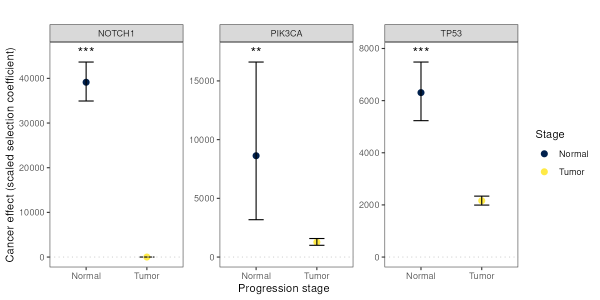

Introduction
ces_variant() estimates a single scaled selection
coefficient for each variant, assuming selection is constant across
every sample included in the analysis. Sometimes, though, your samples
represent an ordered sequence of tumor progression stages — normal
tissue and primary tumor, say, or primary tumor and metastasis, or more
than two stages — and you’d like to know whether (and how) selection on
a variant changes from one stage to the next.
ces_variant_step() and its supporting functions extend
cancereffectsizeR to this setting: instead of one selection intensity
per variant, you get one per stage, estimated jointly from a single
likelihood model. This vignette walks through the workflow: assigning
samples to stages, calculating each gene’s per-stage mutation rate
proportions, running the model, testing whether a step-specific model
actually fits better than a plain ces_variant() run, and
plotting the results.
The output shown below comes from an analysis of esophageal squamous
cell carcinoma (ESCC). The CESAnalysis holds somatic
variants from normal esophageal epithelium and from primary ESCC tumors,
with a sample-level column, Pre_or_Pri, marking each sample
as normal ("Pre") or tumor ("Pri"). Results
are shown for three genes: NOTCH1, TP53, and PIK3CA.
This is a substantial modeling exercise, so it’s worth restating the
core assumption plainly: your samples must represent a real, ordered
progression (each later stage having passed through every earlier one),
and each variant you analyze must belong to exactly one gene. If your
samples are better described as independent subgroups (not a
progression), a stratified ces_variant() analysis (running
separately per subgroup) is more appropriate.
Assigning samples to stages
The first ingredient is a sample_index table associating
every sample with an ordered stage. assign_stage_index()
builds it from a sample-level metadata column (added via
load_maf() or load_sample_data()) and a
description of stage order:
sample_index <- assign_stage_index(cesa, stage_col = "Pre_or_Pri", stage_order = c("Pre", "Pri"))stage_order just needs to be in earliest-to-latest
order. For more than two stages, or when multiple raw values should be
grouped into the same stage, use a named list instead:
sample_index <- assign_stage_index(cesa,
stage_col = "tissue_type",
stage_order = list(
Normal = "Normal",
Primary = "Primary_tumor",
Metastasis = c("Lymph_node_met", "Distant_met")
)
)If you already have a table associating samples with stages, you can
build sample_index by hand instead: it just needs
Unique_Patient_Identifier, group_index (1 =
earliest stage), and group_name columns.
Calculating stage-specific mutation rate proportions
The model also needs, for each gene, what proportion of its total
mutation rate is estimated to accumulate during each stage. This comes
from running gene_mutation_rates() once per stage, each
time restricted to the samples at that stage. Because samples at a later
stage have passed through every earlier stage first, each stage’s rate
is a cumulative total:
cesa <- gene_mutation_rates(cesa,
covariates = "ESCA", save_all_dndscv_output = TRUE,
samples = cesa$samples[Pre_or_Pri == "Pre"]
)
cesa <- gene_mutation_rates(cesa,
covariates = "ESCA", save_all_dndscv_output = TRUE,
samples = cesa$samples[Pre_or_Pri == "Pri"]
)Each call creates a new gene rate group (rate_grp_1,
rate_grp_2, …). stage_mutation_proportions()
converts the cumulative, per-stage rates into per-gene proportions:
stage_mut_prop <- stage_mutation_proportions(cesa,
rate_cols = c("rate_grp_1", "rate_grp_2"),
stage_names = c("Pre", "Pri")
)
stage_mut_prop## gene p_Pre p_Pri rate_Pre rate_Pri
## <char> <num> <num> <num> <num>
## 1: NOTCH1 0.008622453 0.9913775 1.574028e-08 1.825500e-06
## 2: PIK3CA 0.024357783 0.9756422 2.193040e-08 9.003448e-07
## 3: TP53 0.084339892 0.9156601 8.944523e-08 1.060533e-06The p_<stage> columns are the proportions, and the
rate_<stage> columns are the cumulative rates they
were calculated from.
By default, these are uncorrected rates: each gene’s expected
synonymous mutation count from dNdScv’s covariate model, divided by its
number of synonymous sites and by the number of samples. This requires
save_all_dndscv_output = TRUE in each
gene_mutation_rates() call. The rates that
gene_mutation_rates() assigns for
ces_variant() are instead adjusted toward each gene’s
observed synonymous mutation count. That adjustment is skipped whenever
dNdScv’s overdispersion parameter (theta) is below 1, which is common
for sparse early-stage samples, so using uncorrected rates at every
stage keeps the stage proportions internally consistent. To use the
rates in get_gene_rates(cesa) as they are instead, set
rate_source = "gene_rates".
Cumulative rates should never decrease from one stage to the next (a
later stage covers at least as much mutational time as an earlier one),
but dN/dS-based rate estimates are noisy, and a small number of genes
can come out non-monotonic just from that noise. By default
(on_invalid = "floor"), affected genes get a warning and
have their negative/undefined stage contribution floored to a tiny share
(floor_prop, default 1e-6) of the gene’s total rate, with
proportions rescaled to still sum to 1. Set
on_invalid = "NA" to instead leave those genes’ rows as
NA (so you can decide how to handle them, or drop them from
variants before running ces_variant_step()),
or on_invalid = "error" to stop and inspect them
yourself.
Setting mutation rates for the model
The step-specific model starts from each gene’s total (final-stage,
cumulative) mutation rate and divides it among stages using
stage_mut_prop. So before running it, replace the per-stage
rates with the final-stage cumulative rate for every sample:
cesa <- clear_gene_rates(cesa)
cesa <- set_gene_rates(cesa,
rates = stage_mut_prop[, .(gene, rate = rate_Pri)],
missing_genes_take_nearest = TRUE
)ces_variant_step() warns if the included samples still
belong to more than one gene rate group.
Running the model
With sample_index and stage_mut_prop in
hand, ces_variant_step() works much like
ces_variant():
# One compound variant per gene, to estimate gene-level effects (see define_compound_variants()).
# The output shown used a curated set of recurrent and nonsense variants for each gene.
for_comp <- select_variants(cesa, genes = c("NOTCH1", "TP53", "PIK3CA"), min_freq = 2)
gene_variants <- define_compound_variants(cesa,
variant_table = for_comp, by = "gene",
merge_distance = Inf
)
cesa <- ces_variant_step(cesa,
variants = gene_variants, stage_mut_prop = stage_mut_prop,
sample_index = sample_index, run_name = "step_effects",
return_fit = TRUE, conf = 0.95
)(You can pass stage_col/stage_order
directly to ces_variant_step() instead of a pre-built
sample_index, exactly as with
assign_stage_index().)
The output table has one selection intensity column per stage
(si_<stage name>), and, when conf is
set, matching confidence interval columns. It also reports the fit of a
constrained model in which all stages share one selection intensity
(selection_intensity_constant,
loglikelihood_constant):
step_effects## variant_name variant_type si_Pre si_Pri loglikelihood
## <char> <char> <num> <num> <num>
## 1: TP53 compound 6307.780 2161.572 -1376.0627
## 2: NOTCH1 compound 39131.538 0.001 -886.8897
## 3: PIK3CA compound 8628.349 1271.119 -397.7721
## selection_intensity_constant loglikelihood_constant ci_low_95_si_Pre
## <num> <num> <num>
## 1: 2626.6268 -1399.5434 5231.543
## 2: 406.2518 -1699.0672 34931.784
## 3: 1497.3475 -401.5242 3180.976
## ci_high_95_si_Pre ci_low_95_si_Pri ci_high_95_si_Pri num_snv
## <num> <num> <num> <int>
## 1: 7480.451 1993.673 2337.148693 273
## 2: 43655.842 NA 4.991894 204
## 3: 16607.331 1000.922 1578.646337 15
## shared_cov shared_cov_freq total_freq
## <list> <int> <int>
## 1: exome+,mart,ucla,yoko,yuan 1130 1130
## 2: exome+,mart,ucla,yoko,yuan 310 310
## 3: exome+,mart,ucla,yoko,yuan 106 106
## shared_cov_subvariant_freq total_subvariant_freq held_out
## <int> <int> <num>
## 1: 1252 1252 0
## 2: 401 401 0
## 3: 107 107 0Every variant (or compound variant) passed to
ces_variant_step() must map to exactly one gene present in
stage_mut_prop — the mutation-rate proportions are
gene-level, so an intergenic variant or a compound spanning multiple
genes has no single row to use.
Is the step-specific model actually better?
The step-specific model always fits at least as well as the constrained model with one shared selection intensity, because it has more free parameters (one per stage, instead of one overall). To see whether the improvement is more than you’d expect by chance, compare the two with a likelihood ratio test:
lrt <- step_selection_LRT(cesa, step_run_name = "step_effects")Both models use the same likelihood and the same mutation rates, so
they are nested, as a likelihood ratio test requires. (A plain
ces_variant() run on the same cesa is
not nested in the step-specific model, because every sample
carries the final-stage rate. step_selection_LRT() accepts
one via simple_run_name, but only use this when each
sample’s rate is the cumulative rate for its own stage.)
lrt## variant_name loglik_step loglik_simple df LRT_stat p_value
## <char> <num> <num> <num> <num> <num>
## 1: TP53 -1376.0627 -1399.5434 1 46.961339 7.240088e-12
## 2: NOTCH1 -886.8897 -1699.0672 1 1624.354970 0.000000e+00
## 3: PIK3CA -397.7721 -401.5242 1 7.504238 6.155399e-03Plotting results
plot_effects_step() visualizes step-specific effects,
with one panel per variant (or gene, or any other grouping column),
stage on the x-axis, and points colored by stage. It works for any
number of stages. Passing the step_selection_LRT() output
via lrt adds a significance annotation to each panel.
plot_effects_step(step_effects,
group_by = "variant_name", lrt = lrt,
stage_order = c("Pre", "Pri"), stage_labels = c(Pre = "Normal", Pri = "Tumor")
)
Note that a confidence limit comes out NA when it would
fall outside the optimizer’s bounds (by default, 0.001 to 1e9). This is
common for the lower limit when an estimate is at or near the 0.001
floor (for example, NOTCH1’s tumor-stage estimate above).
plot_effects_step() simply omits that side of the error
bar.